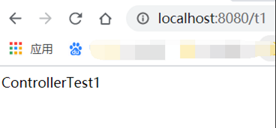
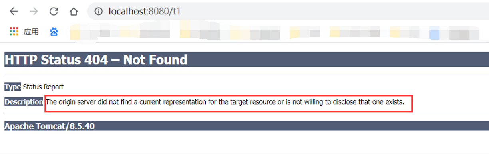
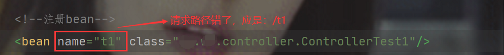
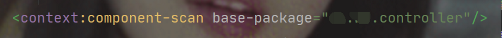
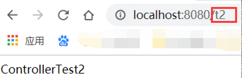
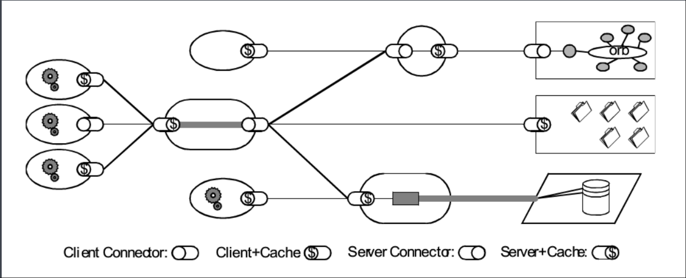
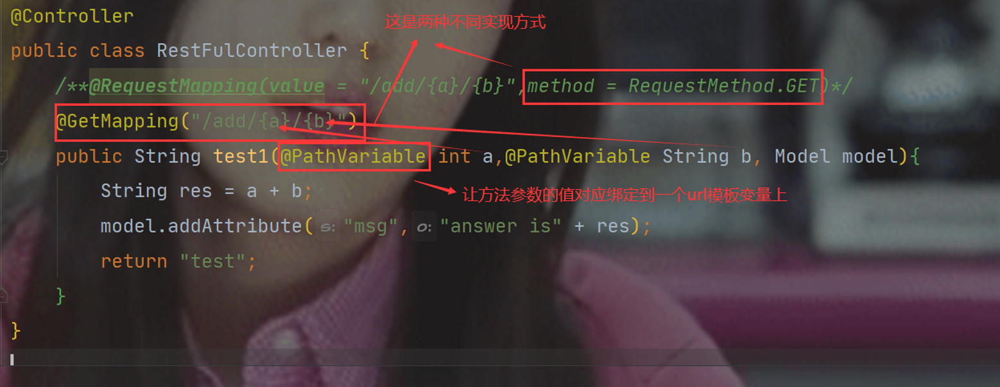
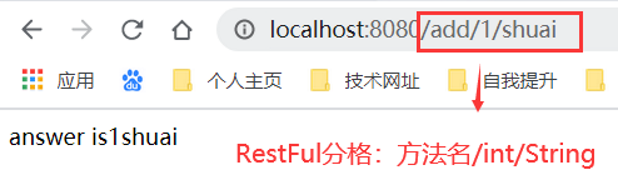
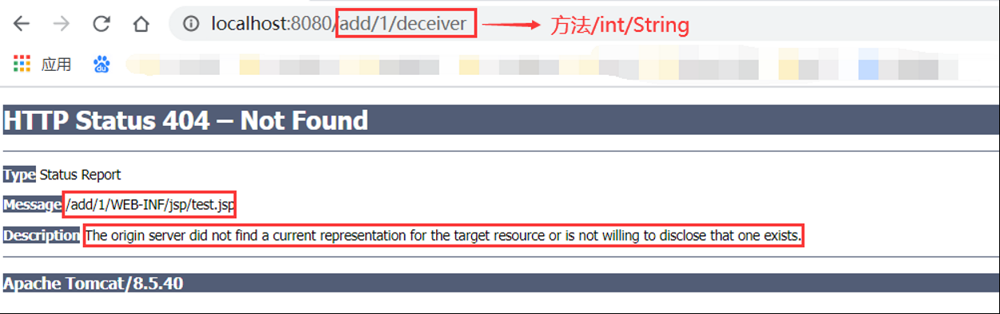
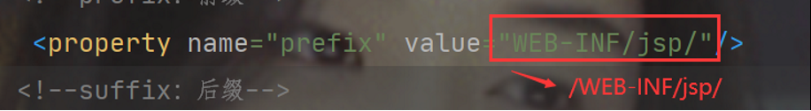

title: 核心控制器和RestFul分格
date: 2020-05-16 23:10:54
tags: java-springMVC
1. 对控制器的简单界定
a. 控制器通常通过接口定义或注解定义实现复杂提供访问应用程序的行为
b. 控制器负责解析用户的请求并将其转换为一个模型
c. 在Springmvc中一个控制器类可以包含多个方法
d. 在Springmvc中，对于controller的配置方法有很多种
2. 在SpringMVC 中，控制器Controller 负责处理由DispatcherServlet 分发的请求，它把用户请求的数据经过业务处理层处理之后封装成一个Model ，然后再把该Model 返回给对应的View 进行展示。在SpringMVC 中提供了一个非常简便的定义Controller 的方法，你无需继承特定的类或实现特定的接口，只需使用@Controller 标记一个类是Controller ，然后使用@RequestMapping 和@RequestParam 等一些注解用以定义URL 请求和Controller 方法之间的映射，这样的Controller 就能被外界访问到。此外Controller 不会直接依赖于HttpServletRequest 和HttpServletResponse 等HttpServlet 对象，它们可以通过Controller 的方法参数灵活的获取到。
3. 例证
a. 实现Controller接口
i. 官方
ii. 例证
1) 新建一个Moudle
2) Web.xml
<?xml version="1.0" encoding="UTF-8"?>
<web-app xmlns="http://xmlns.jcp.org/xml/ns/javaee"
xmlns:xsi="http://www.w3.org/2001/XMLSchema-instance"
xsi:schemaLocation="http://xmlns.jcp.org/xml/ns/javaee http://xmlns.jcp.org/xml/ns/javaee/web-app_4_0.xsd"version="4.0">
<servlet>
<servlet-name>springmvc</servlet-name>
<servlet-class>org.springframework.web.servlet.DispatcherServlet</servlet-class>
<init-param>
<param-name>contextConfigLocation</param-name>
<param-value>classpath:springmvc-servlet.xml</param-value>
</init-param>
<load-on-startup>1</load-on-startup>
</servlet>
<servlet-mapping>
<servlet-name>springmvc</servlet-name>
<url-pattern>/</url-pattern>
</servlet-mapping>
</web-app>
3) Springmvc-servlet.xml
<?xml version="1.0" encoding="UTF-8"?>
<beans xmlns="http://www.springframework.org/schema/beans"
xmlns:xsi="http://www.w3.org/2001/XMLSchema-instance"
xmlns:context="http://www.springframework.org/schema/context"
xmlns:mvc="http://www.springframework.org/schema/mvc"
xsi:schemaLocation="http://www.springframework.org/schema/beans
https://www.springframework.org/schema/beans/spring-beans.xsd
http://www.springframework.org/schema/context
https://www.springframework.org/schema/context/spring-context.xsd
http://www.springframework.org/schema/mvc
https://www.springframework.org/schema/mvc/spring-mvc.xsd">
<!--视图解析器-->
<bean class="org.springframework.web.servlet.view.InternalResourceViewResolver" id="internalResourceViewResolver">
<!--前缀-->
<property name="prefix" value="/WEB-INF/jsp/"/>
<!--后缀-->
<property name="suffix" value=".jsp"/>
</bean>
<!--注册bean-->
<bean name="test1" class="xx.xx.controller.ControllerTest1"/>
</beans>
4) Controller实现类
public class ControllerTest1 implements Controller {
public ModelAndView handleRequest(HttpServletRequest request, HttpServletResponse response) throws Exception {
ModelAndView mv = new ModelAndView();
mv.addObject("msg","ControllerTest1");
mv.setViewName("test");
return mv;
}
}
5) 编写jsp
<%@ page contentType="text/html;charset=UTF-8" language="java" %>
<html>
<head>
<title>Title</title>
</head>
<body>
${msg}
</body>
</html>
6) 测试
a) 结果
b) 错误：在测试的过程中出现了一个错误
找了半天，才发现是自己眼瞎了
所以，不管做什么，一定要细心认真
iii. 小结
1) 实现Controller接口是一种比较老旧的方法
2) 缺点：一个控制器中只能有一个方法，所以多方法就只能多控制器，非常麻烦
b. 注解实现@Controller
i. 简介
1) @Controller注解用于声明Spring类的实例是一个控制器
2) Spring可以使用扫描机制找到应用程序中所有基于注解的控制器类，为了保证Spring能找到控制器，需要在配置文件中声明组件扫描
3) @RequestMapping
a) @RequestMapping注解用于映射url到控制器类或一个特定的处理程序方法。
b) 用于类上时，所有响应请求都以本地址为父路径。用于方法上，就是请求响应本路径。
此时访问路径为：localhost：8080/项目名/father/t2
ii. 例证
1) web.xml同上
2) springmvc-servlet.xml
<?xml version="1.0" encoding="UTF-8"?>
<beans xmlns="http://www.springframework.org/schema/beans"
xmlns:xsi="http://www.w3.org/2001/XMLSchema-instance"
xmlns:context="http://www.springframework.org/schema/context"
xmlns:mvc="http://www.springframework.org/schema/mvc"
xsi:schemaLocation="http://www.springframework.org/schema/beans
https://www.springframework.org/schema/beans/spring-beans.xsd
http://www.springframework.org/schema/context
https://www.springframework.org/schema/context/spring-context.xsd
http://www.springframework.org/schema/mvc
https://www.springframework.org/schema/mvc/spring-mvc.xsd">
<context:component-scan base-package="cn.wf.controller"/>
<!--视图解析器-->
<bean class="org.springframework.web.servlet.view.InternalResourceViewResolver" id="internalResourceViewResolver">
<!--前缀-->
<property name="prefix" value="WEB-INF/jsp/"/>
<!--后缀-->
<property name="suffix" value=".jsp"/>
</bean>
</beans>
1) controller的实现类
@Controller //代表这个类被spring接管
public class ControllerTest2 {
@RequestMapping("/t2")
public String test(Model model){
model.addAttribute("msg","ControllerTest2");
return "test";
}
}
2) 测试
c. 小结
i. 到此时发现，这两个不同的响应请求都指向一个视图，但页面结果却不一样。由此得出：视图被复用，控制器和视图之间是弱耦合关系 1. RESTFUL是一种网络应用程序的设计风格和开发方式，是一个资源定位及资源操作的分格，基于HTTP，可以使用XML格式定义或JSON格式定义。
2. 特点
a. 每一个URI代表1种资源；
b. 客户端使用GET、POST、PUT、DELETE4个表示操作方式的动词对服务端资源进行操作：
i. GET用来获取资源
ii. POST用来新建资源（也可以用于更新资源）
iii. PUT用来更新资源
iv. DELETE用来删除资源
c. 通过操作资源的表现形式来操作资源；
d. 资源的表现形式是XML或者HTML；
e. 客户端与服务端之间的交互在请求之间是无状态的，从客户端到服务端的每个请求都必须包含理解请求所必需的信息。
3. 架构
a. RESTful架构是对MVC架构改进后所形成的一种架构，通过使用事先定义好的接口与不同的服务联系起来。在RESTful架构中，浏览器使用POST，DELETE，PUT和GET四种请求方式分别对指定的URL资源进行增删改查操作。因此，RESTful是通过URI实现对资源的管理及访问，具有扩展性强、结构清晰的特点。
b. RESTful架构将服务器分成前端服务器和后端服务器两部分，前端服务器为用户提供无模型的视图；后端服务器为前端服务器提供接口。浏览器向前端服务器请求视图，通过视图中包含的AJAX函数发起接口请求获取模型。
c. 项目开发引入RESTful架构，利于团队并行开发。在RESTful架构中，将多数HTTP请求转移到前端服务器上，降低服务器的负荷，使视图获取后端模型失败也能呈现。但RESTful架构却不适用于所有的项目，当项目比较小时无需使用RESTful架构，项目变得更加复杂。
d. 访问方式
i. 原来访问方式（及传参）：http://localhost:8080/add?a=1&b=2
ii. restful风格(安全，不暴露属性,隐藏了程序的一些东西)：http://localhost:8080/add/a/b
4. 例证
a. 编写一个新的Controller类
i. 代码
@Controller
public class RestFulController {
/**@RequestMapping(value = "/add/{a}/{b}",method = RequestMethod.GET)*/
@GetMapping("/add/{a}/{b}")
public String test1(@PathVariable int a,@PathVariable String b, Model model){
String res = a + b;
model.addAttribute("msg","answer is" + res);
return "test";
}
}
ii. 说明
iii. 测试
1) 结果
2) 错误

5. 小结
a. 使用路径变量的好处
i. 时路径变得更加简洁
ii. 获得参数更加方便，框架会自动进行类型转换
iii. 通过路径变量的类型可以约束访问参数，如果类型不一致，将无法访问对应的请求方法。
b. 所有的地址栏请求默认为 HTTP GET 类型
c. 方法级别的注解的变体
i. @GetMapping （是一个组合注解）
ii. @PostMapping
iii. @PutMapping
iv. @DeleteMapping
v. @PatchMapping